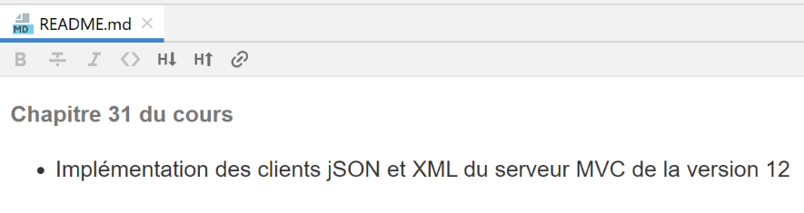

1. Foreword
The PDF of this document is available |HERE|.
The examples in this document are available |HERE|.
This document provides a list of Python scripts in various fields:
- the fundamentals of the language;
- MySQL and PostgreSQL database management;
- TCP/IP network programming (HTTP, POP3, IMAP, SMTP protocols);
- MVC web programming with the FLASK framework;
- three-tier architectures and interface-based programming;
This is not a comprehensive Python course but a collection of examples intended for developers who have already used a scripting language such as Perl, PHP, or VBScript, or for developers accustomed to typed languages such as Java or C# who are interested in discovering an object-oriented scripting language. This document is not well-suited for readers with little or no programming experience.
Nor is this document a collection of "best practices." Experienced developers may find that some of the code could be written more elegantly. The sole purpose of this document is to provide examples for someone wishing to learn Python 3 and the Flask framework. They can then deepen their understanding using other resources.
The scripts are commented, and the results of their execution are shown. Additional explanations are sometimes provided. This document requires active reading: to understand a script, you must read its code, its comments, and its execution results.
The examples in this document are available |HERE|:

This document is an update of an older document published in June 2011 |https://tahe.developpez.com/tutoriels-cours/python/|. The 2011 document was built using the Python 2.7 interpreter. Since then, Python 3.x versions have been released. As of February 2020, the current version is 3.8. The 3.x versions have introduced a break in cross-version compatibility: code that runs under Python 2.7 may not work under Python 3.x. This is particularly true for console output. In 2.7, you can write [print "toto"], whereas in 3.x you must write [print("toto")]: parentheses are required. This simple change means that most of the code provided with the 2011 document is unusable directly with Python 3.x. It must be modified.
This new document does more than just update the 2011 code to make it executable with Python 3.8:
- the sections on TCP/IP programming and database usage have undergone significant changes;
- the section on web programming, which was previously just an introduction, is now a complete course using the Flask framework;
To build this course, I took an unconventional approach: I ported the PHP course [Introduction to PHP7 Through Examples]. I therefore did not follow the traditional structures of Python or Flask courses. Above all, I wanted to know how I could do in Python 3 what I had done in PHP 7. The result is that I was able to recreate, in Python 3 / Flask, all the examples from the PHP 7 course.
This document may contain errors or omissions. Readers can use the discussion thread |forum| to report them.
The contents of the document are as follows:
Chapter | Code Repository | Contents |
Course Overview | ||
Setting up a work environment | ||
[Basics] | The basics of the Python language – language structures – data types – functions – console output – format strings – type conversion – lists – dictionaries – regular expressions | |
[strings] | String notation – methods of the <str> class – encoding/decoding strings in UTF-8 | |
[exceptions] | Exception handling | |
[functions] | Variable Scope – Parameter Passing – Using Modules – The Python Path – Named Parameters – Recursive Functions | |
[files] | Reading/writing a text file – handling UTF-8 encoded files – handling JSON files | |
[taxes/v01] | Version 1 of the application exercise: calculating income tax . The application is available in 18 versions – Version 1 implements a procedural solution | |
[imports] | Managing application dependencies by importing modules – a dependency management method is presented – it is used throughout the document – managing the Python Path | |
[impots/v02] | Version 2 of the application builds on version 1 by gathering all configuration constants into a configuration file that also manages the Python Path | |
[impots/v03] | Version 3 of the application builds on version 2 by using functions encapsulated in a module— dependency management is handled via configuration—introduction of a JSON file to read the data needed for tax calculation and write the calculation results | |
[classes/01] | Classes – inheritance – methods and properties – getters/setters – constructor – [__dict__] property | |
[classes/02] | Introduction to the [BaseEntity] and [MyException] classes used throughout the rest of the document – [BaseEntity] facilitates object/dictionary conversions | |
[three-layers] | Layered architecture and interface-based programming. This chapter presents the programming methods used throughout the rest of the document | |
[taxes/v04] | Version 4 of the application – this version implements a solution with a layered architecture, interface-based programming, and the use of classes derived from [BaseEntity] and [MyException] | |
[databases/mysql] | Installing the MySQL DBMS – connecting to a database – creating a table – executing SELECT, UPDATE, DELETE, and INSERT SQL statements – transactions – parameterized SQL queries | |
[databases/postgresql] | Installing the PostgreSQL DBMS – connecting to a database – creating a table – executing SELECT, UPDATE, DELETE, and INSERT SQL statements – transactions – parameterized SQL queries | |
[databases/anydbms] | Writing DBMS-independent code | |
[databases/sqlalchemy] | The SqlAlchemy ORM (Object- Relational Mapper) – an ORM allows for a unified approach to working with different DBMSs – mapping classes to SQL tables – operations on classes representing SQL tables | |
[taxes/v05] | Version 5 of the tax calculation application – Using the layered architecture from version 04 and the SqlAlchemy ORM to work with MySQL and PostgreSQL DBMSs | |
[inet] | Web Programming – TCP/IP Protocol (Transmission Control Protocol / Internet Protocol) – HTTP Protocols (HyperText Transfer Protocol) – SMTP (Simple Mail Transfer Protocol) – POP (Post Office Protocol) – IMAP (Internet Message Access Protocol) | |
[flask] | Web services with the Flask web framework – displaying an HTML page – JSON web service – GET and POST requests – managing a web session | |
[impots/http-servers/01] [taxes/http-clients/01] | Version 6 of the application exercise – Creating a JSON web service for tax calculation with a multi-layer architecture – Writing a web client for this server with a multi-layer architecture – client/server programming – using the [requests] module | |
[taxes/http-servers/02] [taxes/http-clients/02] | Version 7 of the application exercise – Version 6 is improved: the client and server are multithreaded – [Logger] utilities to log client/server exchanges – [SendMail] to send an email to the application administrator | |
[taxes/http-servers/03] [taxes/http-clients/03] | Version 8 of the application exercise – Version 7 is improved by the use of a web session | |
[xml] | XML (eXtended Markup Language) management with the [xmltodict] module | |
[taxes/http-servers/04] [impots/http-clients/04] | Version 9 of the application exercise – version 8 is modified to include client/server exchanges in XML; | |
[taxes/http-servers/05] [taxes/http-clients/05] | Version 10 of the application exercise – instead of processing N taxpayers via N GET requests, a single POST request is used with the N taxpayers in the POST body | |
[taxes/http-servers/06] [taxes/http-clients/06] | Version 11 of the application exercise – the application’s client/server architecture is modified: the [business] layer moves from the server to the client | |
[taxes/http-servers/07] | Version 12 of the application exercise – this version implements an MVC (Model–View– Controller) server that delivers JSON, XML, and HTML interchangeably, depending on the client’s request. This chapter implements the JSON and XML versions of the server | |
[impots/http-clients/07] | Implementation of the JSON and XML clients for the MVC server in Version 12 | |
[impots/http-servers/07] | Implementation of the HTML server in version 12 – using the Bootstrap CSS framework – | |
[impots/http-servers/08] | Version 13 of the application exercise – Refactoring the code from version 12 – session management using the [flask_session] module and a Redis server – using encrypted passwords | |
[impots/http-servers/09] [impots/http-clients/09] | Version 14 of the application exercise – implementing URLs with a CSRF (Cross-Site Request Forgery) token | |
[impots/http-servers/10] | Version 15 of the application exercise – refactoring the code from version 14 to handle two types of actions: ASV (Action Show View), which are used only to display a view without modifying the server’s state, and ADS (Action Do Something), which perform an action that modifies the server’s state—these actions all end with a redirect to an ASV action—this allows for proper handling of page refreshes in the client browser | |
[impots/http-servers/11] | Version 16 of the application – URL management with prefixes | |
[impots/http-servers/12] | Version 17 of the application – porting version 16 to an Apache/Windows server | |
[impots/http-servers/13] | Version 18 of the application – fixes a bug in version 17 |
The final version of the application exercise is a client/server tax calculation application with the following architecture:

The [web] layer above is implemented using an MVC architecture:

The content of this document is dense. Readers who work through it to the end will gain a solid understanding of MVC web programming in Python/Flask and, beyond that, a solid understanding of MVC web programming in other languages.
Readers who prefer to see the code, test it, and modify it rather than read a lecture can proceed as follows:
- Set up a development environment:
- a Python interpreter;
- the PyCharm Community IDE;
- Laragon (Apache server, MySQL DBMS, Redis server);
- the PostgreSQL database;
- the Postman HTTP client;
- the hMailServer mail server;
- Explore the code in the examples |HERE|:

- In each folder, there is a [README.md] file that links the folder to a chapter of the course and summarizes its contents:
The [README.md] file looks like this:

It is unlikely that the reader will read the entire course:
- A beginner reader might read chapters 1 through 15 and stop there. They can then spend time coding their own Python scripts before returning to this course;
- Readers with a basic understanding of Python who want to learn about databases and ORM (Object Relational Mapper) [SQLAlchemy] may find chapters 16 through 20 sufficient;
- Readers wanting to learn web programming (HTTP, SMTP, POP3, IMAP) can read Chapter 21. This chapter is quite complex and covers advanced scripts. It can be read on two levels:
- to learn about internet protocols;
- to obtain scripts that utilize these protocols;
- Readers with a basic understanding of Python who wish to learn web programming using the Flask framework should read Chapter 22;
- Readers wishing to delve deeper into web programming with the Flask framework can study Chapters 23 through 38. These chapters cover the development of increasingly complex client/server applications, as well as an HTML/Python application following the MVC (Model–View–Controller) development pattern. This application is developed in Chapter 32. You may stop there. The following chapters introduce non-fundamental changes;
Serge Tahé, September 2020